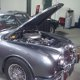
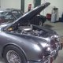

Annonces
Vous recherchez une voiture ancienne ou désirez vendre la votre ? Ecrivez à contact@classicetsportautos.fr ou appelez le +33(0)4.57.93.38.57.
PAGE EN CONSTRUCTION, LE CONTENU CI-DESSOUS EST FAUX ET INVENTE!!
Vente
{kind=link}
Année-modèle: 1974
Kilométrage: 99 000 KM
Overdrive: Oui
 

{kind=link}
Vends MGB couleur "Red Flag". 99 000 kms au compteur. Restauration faite en 2007: la voiture a été mise à nue, sablée et peinte dans cette jolie couleur anglaise Red Flag. A noter: roues à fils, overdrive, pare-chocs chromés, etc.. Intérieur cuir, moquette neuve, capote neuve, couvre tonneau, hard top. Véhicule visible en journée seulement.
Publié le 4 Février 2011.
Fiat 500 VENDUE
Prix: 6 000€
Ville: 29000 Concarneau
Restauration: Moteur, intérieur
Année-modèle: 1971
Kilométrage: 125 000 KM
Overdrive: Oui
Achat

Triumph TR3
Cherche Triumph TR3 à rénover. Prix maximum: 7000€ Etat épave accepté. Toutes régions.
Actualité
Samedi 8 Janvier, Classic & Sport Autos reçoit en toute décontraction amis, clients et passionnés afin de fêter la nouvelle année. Découvrez les photos de ce rassemblement de belles voitures >> Austin Healey Sprite, Jaguar Type E, Saab 96 v4, Porsche 912, Ferrari Testarossa.. A noter le stand apprécié de Tony (Caruman production) qui réaliste de très beaux cadres déco avec le véhicule de votre choix.
Contact
- e-mail : contact@classicetsportautos.fr
- Tél : +33 (0)4.57.93.38.57
- Fax : +33 (0)4.57.93.38.57
Adresse
- Classic et Sport Autos
- 20 RUE DU BEAL
- 38400 Saint-martin-d'hères
Téléphone +33 (0)4.57.93.38.57 - Télécopie +33 (0)4.57.93.38.57 - contact@classicetsportautos.fr
Responsable de publication : Jean-François Huguet
Numéro siren : 527 671 515